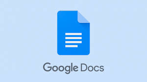
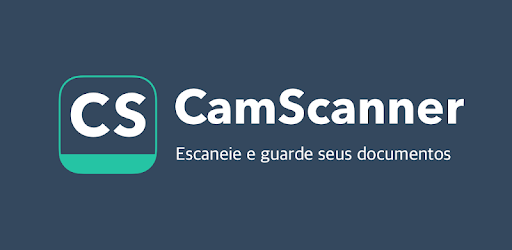
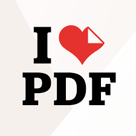

FOTOMATH

Esse é um app para o seu celular! Com ele você pode digitalizar e reconhecer equações
matemáticas;
o aplicativo exibe explicações passo a passo na tela. Ele está disponível gratuitamente
para
Android e iOS.
GOOGLE DOCUMENTOS

O Google Docs é um pacote de aplicativos do Google, ou seja, se você tem uma conta no Google
você
tem acesso a ele.
As ferramentas do Google Docs funcionam de forma síncrona e assíncrona.
Essa ferramenta você pode até conhecer mas acredite, algumas pessoas não fazem ideia da
existência!
Também existe um app disponível gratuitamente para Android e iOS.
CAMSCANNER

O camscanner é um aplicativo que permite que dispositivos iOS e Android sejam usados como
scanners
de imagem.
Ele permite que os usuários 'digitalizem' documentos e compartilhem a foto como JPEG ou PDF.
É uma excelente ferramenta em tempos de ANPS(Atividades Não Presenciais).
I LOVE PDF

O I love PDF é uma ferramenta on-line para os amantes de PDF
Ferramenta online e completamente gratuita para juntar PDF, dividir PDF, comprimir PDF,
converter documentos Office para PDF,
conversão de PDF para JPG, e JPG para PDF. O melhor e que ele não requer instalação.